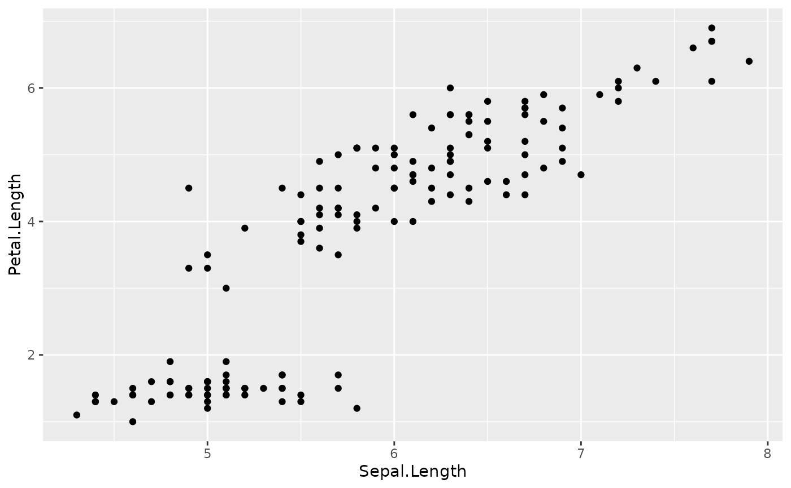

Internal replacement for the removed ggplot2::aes_string() pre-v4.0
Arguments
- x, y, ...
List of name-value pairs in the form
aesthetic = variabledescribing which variables in the layer data should be mapped to which aesthetics used by the paired geom/stat.Mapped values should be provided as a single character input.
Non-character inputs will not be altered and will be processed as usual.
Expressions to be evaluated may be passed as a character string to be interpreted via
str2lang()
Examples
ggplot2::ggplot(iris) +
ggplot2::geom_point(aes_string2(x = "Sepal.Length", y = "Petal.Length"))
